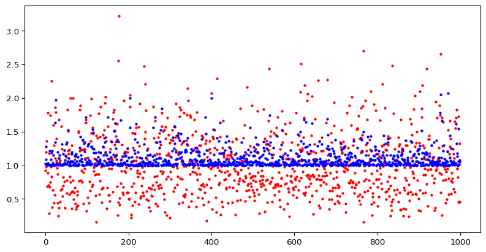
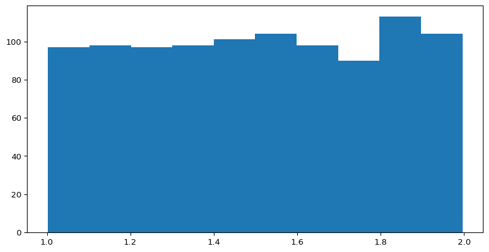
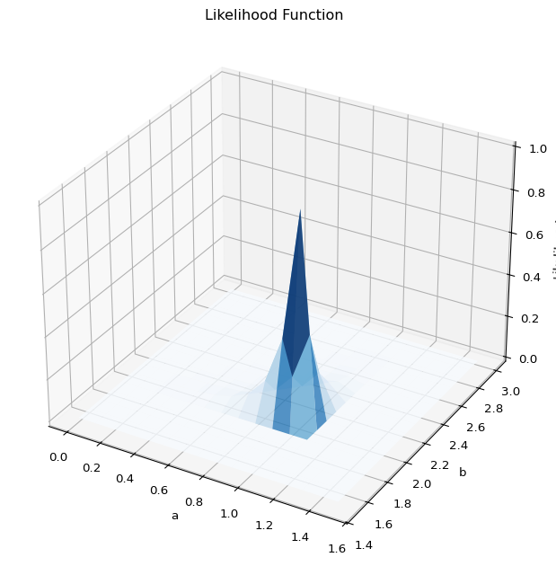

[-0.56047565 -0.23017749 1.55870831 0.07050839 0.12928774 1.71506499
0.46091621 -1.26506123 -0.68685285 -0.44566197]12wk-1: 최대가능도추정 (4) (Python, 참고자료)
강의영상
{{MLE 불변성(Invariance)
예제1
공평한 동전을 5회 던져서 아래와 같은 결과를 얻었다고 하자.
- \(0, 1, 0, 0, 1\)
실패확률을 추정하라.
(풀이) – MLE에 기초한풀이
\(X_1,X_2,\dots,X_n \sim Ber(\theta)\) 에서 MLE에 의한 \(\theta\)의 추정값은 \(\frac{2}{5}\)이므로 (왜?) 성공확률 \(\theta\)는 \(\frac{2}{5}\)로 추정할 수 있다. 실패할확률은 \(1-\theta\)인데, \(\theta\)의 값을 이미 \(\frac{2}{5}\)로 추정했으므로 실패할확률의 추정값은 \(1-\frac{2}{5}=\frac{3}{5}\)이라고 할 수 있다.
- 개념: MLE에 기반한 추정법은 아래와 같다.
- 모수를 MLE로 추정한다
- 추정의 대상과 모수와의 함수관계를 파악한다.
- 1에서 얻은 추정값을 2에서 얻은 함수관계에 대입한다.
- 이 논리로 위의 예제를 다시 해석하면 아래와 같다.
- 모수를 추정한다: 베르누이 분포 \(Ber(\theta)\)의 모수는 성공확률 \(\theta\)이며, \(\theta\)의 추정값은 \(\frac{2}{5}\) 이다.
- 추정의 대상과 모수와의 함수관계를 파악한다: 추정의 대상은 실패확률이다. 그런데 “\(실패확률=1-\theta\)”라는 관계가 있는데 이것이 추정의 대상과 모수와의 함수관계이다.
- 1에서 얻은 추정값을 2에서 얻은 함수관계에 대입한다: 우리가 1에서 얻은 추정값은 \(\frac{2}{5}\)이다. 2에서 얻은 함수관계는 \[추정의대상=실패확률=1-\theta\]이다. 1에서 얻은 \(\theta\)에 대한 추정값 \(\frac{2}{5}\)를 위의 \(\theta\)자리에 plugin하면 \(실패확률=\frac{3}{5}\)를 얻는다.
- 주의(고급내용): 3의 과정을 수식으로 표현하면 아래와 같다.
\[\widehat{실패확률}^{MLE}=\widehat{1-\theta}^{MLE}=1-\hat{\theta}^{MLE}\]
이러한 논리전개는 언뜻 당연해보이지만 사실 당연한건 아니다. 아래와 같은 사실은
\[\widehat{1-\theta}^{MLE}=1-\hat{\theta}^{MLE}\]
일반적인 추정법에는 성립하지 않는다. 오직 MLE에서만 이러한 논리전개가 가능함. (MLE가 가진 좋은 성질임)
예제2
아래에서
\[X \sim N(\mu,1)\]
얻은 10개의 샘플이 다음과 같다고 하자.
\(\mathbb{E}(X^2)\)을 추정하라.
(참고)
- 진실세계의정보: \(\mathbb{E}(X), \mathbb{E}(X^2)\)
- 데이터세계의정보: \(\bar{x}\)
(풀이)
언뜻 생각하면 아래와 같이 추정해야 할 것 같다.
np.mean(x**2)np.float64(0.8243025996854358)그런데 \[\mathbb{E}(X^2)=\big\{\mathbb{E}(X)\big\}^2+\mathbb{V}(X)\]
임을 고려하면 아래와 같이 추정하는것도 말이 되는 것 같다.
np.mean(x)**2 + 1np.float64(1.005568986891666)두 값은 얼추 비슷하지만 완전히 같지는 않다. 둘다 타당한 추정법인것 같은데 무엇이 더 올바른 추정일까?
분석
A = []
B = []
for i in range(1000):
x = np.random.randn(10)
A.append(np.mean(x**2))
B.append(1 + np.mean(x)**2)
plt.scatter(range(1000), A, c='red', s=5, label='mean(x^2)')
plt.scatter(range(1000), B, c='blue', s=5, label='1+mean(x)^2')
plt.xlabel("")
plt.ylabel("")
plt.show()
비교한 결과 방법A와 방법B중에서는 방법B가 더 우수하다는 생각이 든다.
- 방법A: \(\text{mean}(x^2)=\bar{x^2}\)
- 방법B: \(1+\text{mean}(x)^2=1+\bar{x}^2\)
왜 그럴까? 사실 방법B는 최대가능도방법의 원리로 추정된 값이기 때문이다.
- 모수를 MLE로 추정한다: 정규분포의 모수는 \(N(\mu,\sigma^2)\)인데, \(\sigma=1\)로 주어졌으므로 추정할 필요가 없고, \(\mu\)를 추정하면 \(\bar{x}\)이다.
- 추정의 대상과 모수와의 함수관계를 파악한다: \(\mathbb{V}(X)=\mathbb{E}(X^2)-\{\mathbb{E}(X)\}^2\)의 관계가 있으므로 추정의 대상은 \(\mathbb{E}(X^2)=\sigma^2+\mu^2\)와 같이 표현할 수 있음. 그런데 \(\sigma^2=1\)이 주어졌으므로 “\(추정의대상=\mathbb{E}(X^2)=1+\mu^2\)” 의 관계가 있음.
- 1에서 얻은 추정값을 2에서 얻은 함수관계에 대입한다: 따라서 \[{\mathbb{E}(X^2)}의 추정값 = 1+\bar{x}^2\]
균등분포
구간 \((a,b)\)에서 임의의 난수를 뽑는 실험을 상상하자. 이러한 실험은 아래와 같이 표현할 수 있다. \[X \sim U(a,b)\]
여기에서 \(U\)는 uniform의 약자이다. 히스토그램을 그려보자. (이때 \(a=1, b=2\)를 가정함)

히스토그램의 극한을 상상하고 pdf의 수식을 쓰면 아래와 같다.
\[f_X(x)=\frac{1}{b-a}, \quad a \leq x \leq b\]
수식을 좀 더 정리하면 아래와 같다.
\[f_X(x)=\frac{1}{b-a}I(a \leq x \leq b)\]
여기에서 \(I(a \leq x \leq b)=\begin{cases} 1 & a \leq x \leq b \\ 0 & o.w. \end{cases}\) 이다. 이제 아래와 같은 관측치를 얻은 상황에서 x의 중심 \(\mathbb{E}(X)\)를 추정하는 문제를 고려하자.
x = np.array([1.287578, 1.788305, 1.408977, 1.883017, 1.940467,
1.045556, 1.528105, 1.892419, 1.551435, 1.456615])
xarray([1.287578, 1.788305, 1.408977, 1.883017, 1.940467, 1.045556,
1.528105, 1.892419, 1.551435, 1.456615])(1) 가능도함수를 구하라.
(풀이)
가능도함수의 수식은 아래와 같다. \[L(\theta|data)=f(data|\theta)\]
여기에서 \(\theta = (a,b)\) 이다. 그런데
- \(f(data|\theta) = f(x_1,\dots,x_{10}|\theta)=f(x_1|\theta)\dots f(x_{10}|\theta)\)
- \(f(x_1|\theta) = \frac{1}{b-a}I(a\leq x_1 \leq b)=\frac{1}{b-a}I(a\leq x_1)I(x_1\leq b)\)
이므로 가능도 함수는 아래와 같다.
\[L(a,b)=\frac{1}{(b-a)^{10}}\times I(a\leq x_1)\dots I(a \leq x_n)\times I(x_1\leq b)\dots I(x_n\leq b)\]
가능도 함수를 정의하기전에
a = 1.2
b = 1.5주어진 \(a,b\)에 대한 아래의 값들을 조사하여보자.
print((b-a)**10)
print(x)
print(a <= x)
print(x <= b)5.9049000000000085e-06
[1.287578 1.788305 1.408977 1.883017 1.940467 1.045556 1.528105 1.892419
1.551435 1.456615]
[ True True True True True False True True True True]
[ True False True False False True False False False True]가능도함수는 아래와 같이 정의된다.
likelihood = 1/(b-a)**10 * np.prod(a <= x) * np.prod(x <= b)
likelihoodnp.float64(0.0)(2) 가능도함수의 특징을 살펴보자.
(풀이)
- 가능도함수는 항상 양수임
- 가능도가 0이 안나올라면 \(a\)는 \(1.045556\)보다 작아야하고, \(b\)는 \(1.940467\)보다 커야함.
(3) 가능도함수의 값을 표로 정리하자.
(풀이)
\(L(a,b)\)에 대한 값을 조사하여 표를 만들어보면 아래와 같다.
| \(b=1.5\) | \(b=1.8\) | \(b=2.1\) | \(b=2.4\) | \(b=2.7\) | \(b=3\) | |
|---|---|---|---|---|---|---|
| \(a=0\) | 0.00e+00 | 0.00e+00 | 6.00e-04 | 1.58e-04 | 4.86e-05 | 1.69e-05 |
| \(a=0.3\) | 0.00e+00 | 0.00e+00 | 2.80e-03 | 6.00e-04 | 1.58e-04 | 4.86e-05 |
| \(a=0.6\) | 0.00e+00 | 0.00e+00 | 1.73e-02 | 2.80e-03 | 6.00e-04 | 1.58e-04 |
| \(a=0.9\) | 0.00e+00 | 0.00e+00 | 1.62e-01 | 1.73e-02 | 2.80e-03 | 6.00e-04 |
| \(a=1.2\) | 0.00e+00 | 0.00e+00 | 0.00e+00 | 0.00e+00 | 0.00e+00 | 0.00e+00 |
| \(a=1.5\) | 0.00e+00 | 0.00e+00 | 0.00e+00 | 0.00e+00 | 0.00e+00 | 0.00e+00 |
표를보면 \((a,b)=(0.9, 2.1)\)에서 최대값을 가지는 듯 하다.
(4) 가능도함의 그림을 그려보자.
(풀이)

\((a,b)=(1.1,1.9)\) 에서 최대값을 가지는 것 같다.
(5) 이론적인 MLE를 구하라.
(풀이)
가능도함수의 수식은 아래와 같다. \[L(a,b)=\frac{1}{(b-a)^{10}}\times I(a\leq x_1)\dots I(a \leq x_n)\times I(x_1\leq b)\dots I(x_n\leq b)\]
그런데
- \(I(a\leq x_1)\dots I(a \leq x_n) = I(a \leq \min(x_1,\dots,x_n))\)
- \(I(x_1\leq b)\dots I(x_n\leq b)= I(\max(x_1,\dots,x_n)\leq b)\)
이고
print(np.min(x)); print(np.max(x))1.045556
1.940467이므로
- \(I(a\leq x_1)\dots I(a \leq x_n) = I(a \leq \min(x_1,\dots,x_n))=I(a\leq 1.045556)\)
- \(I(x_1\leq b)\dots I(x_n\leq b)= I(\max(x_1,\dots,x_n)\leq b)=I(1.940467 \leq b)\)
와 같이 정리된다. 따라서 가능도함수는 아래와 같다.
\[L(a,b)=\frac{1}{(b-a)^{10}}\times I(a\leq 1.045556)\times I(1.940467 \leq b)\]
수식을 살펴보면 (1) \(a\leq 1.045556\) 이고 \(b\geq 1.940467\)일 경우만 가능도함수는 \(0\)이 아닌 값을 가지고 (2) 그 값은 \((b-a)\)값이 작을수록 최대가 되므로 \[(a,b)=(1.045556,1.940467)\]에서 이론적인 최대값을 가진다.
이 결과는 일반화될 수 있으므로 아래와 같이 정리가능하다.
\(X_1,\dots,X_n \overset{iid}{\sim} U(a,b)\) 일때 가능도함수는 아래와 같고 \[L(a,b)=\frac{1}{(b-a)^n}\times I(a \leq \min(data)) \times I(\max(data)\leq b)\] \(a,b\)를 최대가능도추정법으로 추정하면 각각 아래와 같다.
- \(a의 추정값 = \min(data)\)
- \(b의 추정값 = \max(data)\)
(6) \(\mathbb{E}(X)\)의 값을 추정하라. (최대가능도추정법을 사용할 것)
(풀이)
아래를 다시 따르면 된다.
- 모수를 MLE로 추정한다.
- 추정의 대상과 모수와의 함수관계를 파악한다.
- 1에서 얻은 추정값을 2에서 얻은 함수관계에 대입한다.
1. 균등분포의 모수는 \(a,b\)이고 이를 각각 추정한 결과는 \(\min(data)\), \(\max(data)\)이다.
2. 추정의대상은 \(X\)의 평균인데 이 값은 (직관적으로) \[\mathbb{E}(X)=\frac{a+b}{2}\] 와 같이 계산할 수 있다.
3. 따라서 평균의 추정값은 \(\frac{\min(data)+\max(data)}{2}\)로 계산할 수 있다.
이제 11wk-2의 예제3(마지막 예제)의 결과를 다시 살펴보자. 왜 중심을 추론할때 양 극단값만 고려하면 충분한지 이해가 되는가?
- 결론
- MLE는 데이터분석에서 가장 유용한 추정방법이라 할 수는 없지만 (사람마다 취향이 있으니까요?)
- 꽤 유용하고 많은 분야에서 의미있게 사용된다.
- 특히 기존에 사용되었던 MME (평균으로 해결하자는 주의) 와 비교해서는 성능이 좋다고 알려져있다.1
Footnotes
불편성에서만 조금 밀리고, 일치성/최소분산성등의 성질에서 동등하거나 우의에 있음↩︎